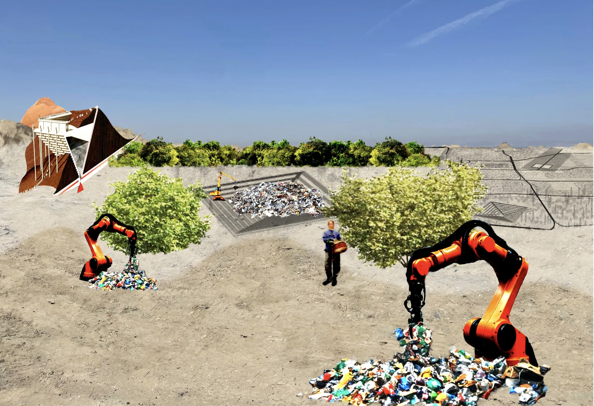
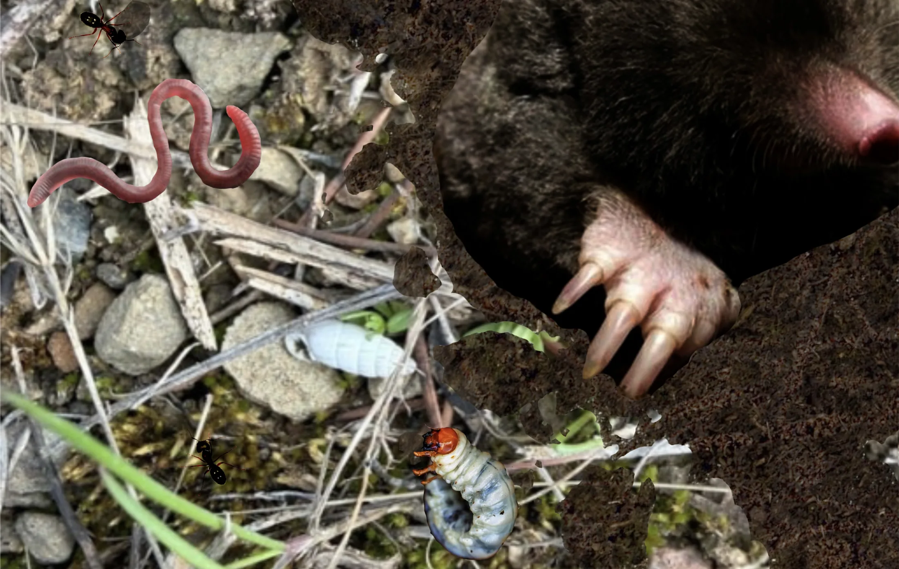

Ecological crises are often reduced to objective "matters of fact" that propose green technocapitalism as the sole remedy. "Sifting Ankara Soil" reclaims these crises as "matters of concern," synthesizing scientific data with sensible experience.
This brings us to the our transition from analysis to intervention. Sifting is an awakening that repurposes the traditional urban grid into a diagnostic sensor. Cracked foundations and wavy asphalt are no longer accidental flaws, but tangible proof of ignored geological reality. We begin to treat design as an active form of repair, paving the way for our speculative solutions in the following scenes.



